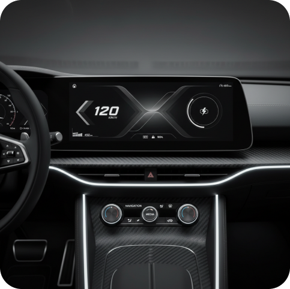

Counter: 1
SinglePageStartup
Launch a startup-specific landing page before the backend exists.
Use the singlepage draft system to test the offer, structure, and visual language quickly, then promote only approved decisions.

Counter: 1
SinglePageStartup
Use the singlepage draft system to test the offer, structure, and visual language quickly, then promote only approved decisions.
